Plot-focused report for the chr22 HG002 structural variant benchmark. This version removes long logs, tool previews, references, and conclusion sections. It keeps only minimal metric tables plus figures that show benchmark behaviour and representation sensitivity.
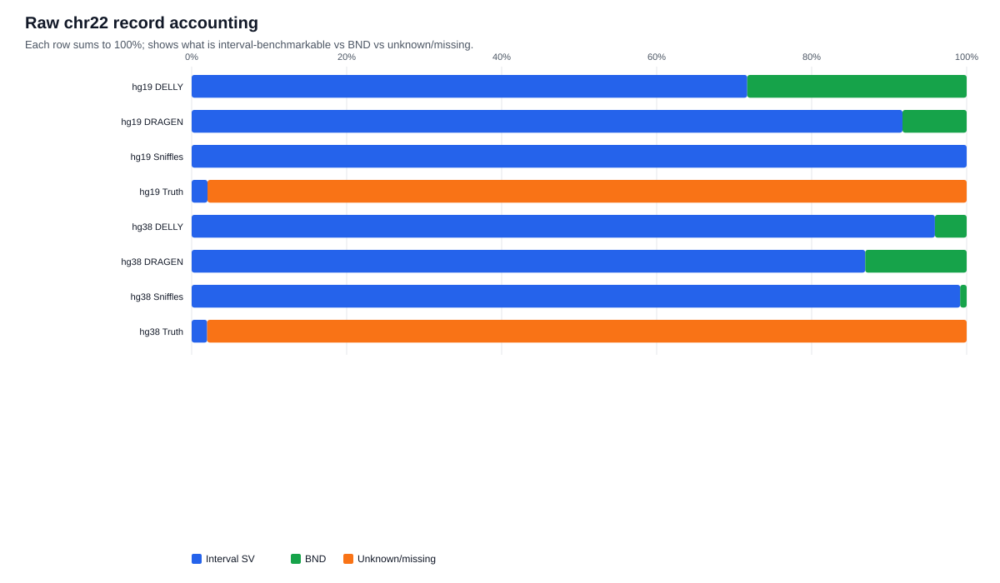
Raw VCF accounting: shows how much of each chr22 file is interval-style SV, BND, or unknown/missing.
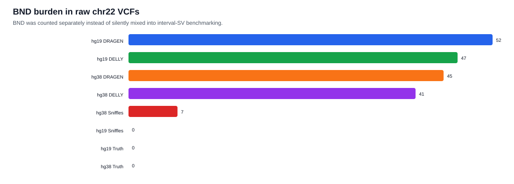
BND burden: these were counted separately because breakend-style records are not directly comparable to interval DEL/DUP/INS/INV calls.
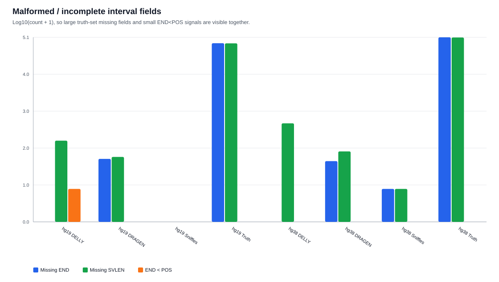
QC issue burden: log-scaled view of missing END, missing SVLEN, and END < POS records.
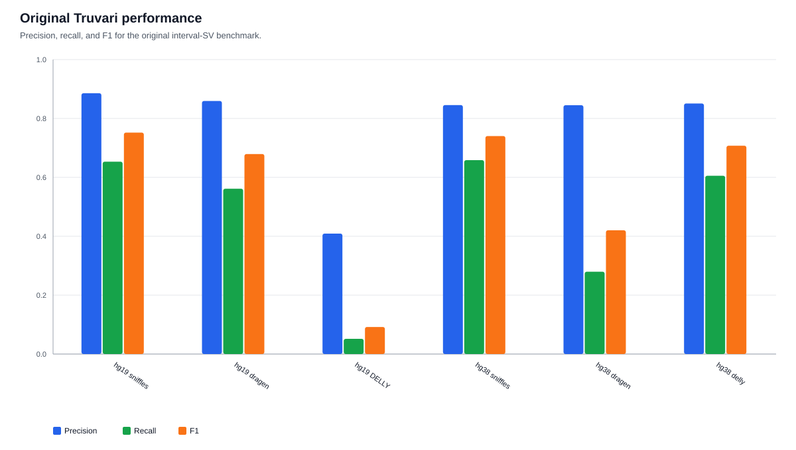
Original Truvari precision, recall, and F1 across builds and callers.
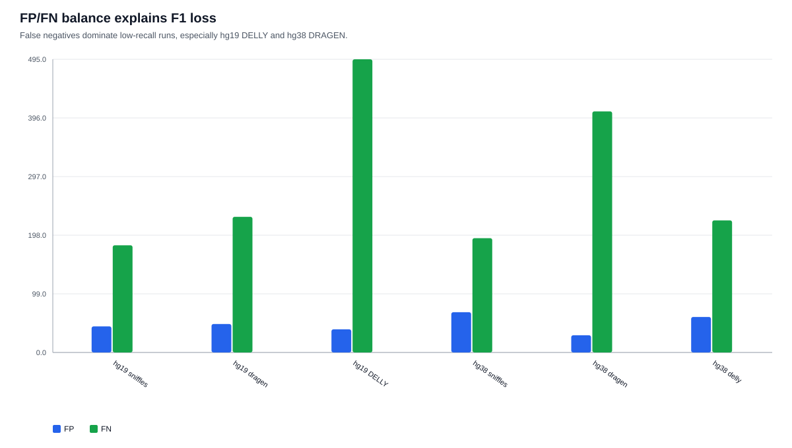
FP/FN balance: highlights whether low F1 is mainly caused by false positives or false negatives.
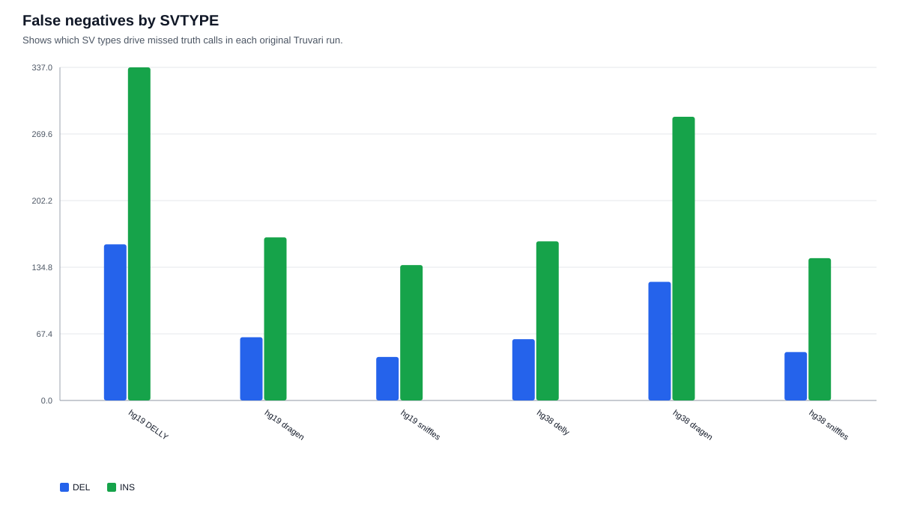
FN by SVTYPE: shows which variant type drives missed truth calls.
| Run | Precision | Recall | F1 | TP | FP | FN |
|---|---|---|---|---|---|---|
| hg19 sniffles | 0.886 | 0.653 | 0.752 | 341 | 44 | 181 |
| hg19 dragen | 0.859 | 0.561 | 0.679 | 293 | 48 | 229 |
| hg19 DELLY | 0.409 | 0.052 | 0.092 | 27 | 39 | 495 |
| hg38 sniffles | 0.845 | 0.658 | 0.740 | 372 | 68 | 193 |
| hg38 dragen | 0.845 | 0.280 | 0.420 | 158 | 29 | 407 |
| hg38 delly | 0.851 | 0.605 | 0.707 | 342 | 60 | 223 |
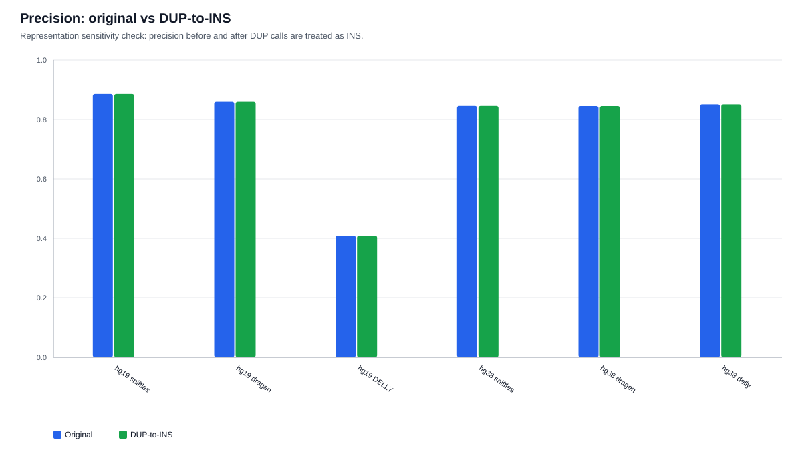
Precision before and after DUP-to-INS conversion.
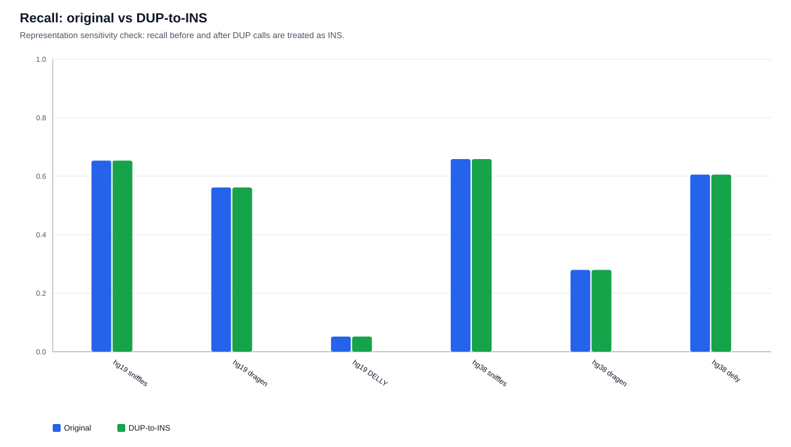
Recall before and after DUP-to-INS conversion.
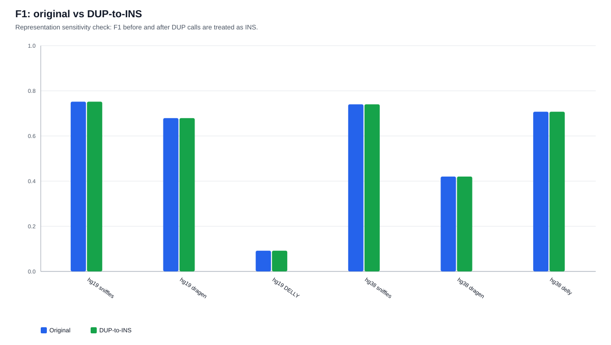
F1 before and after DUP-to-INS conversion.
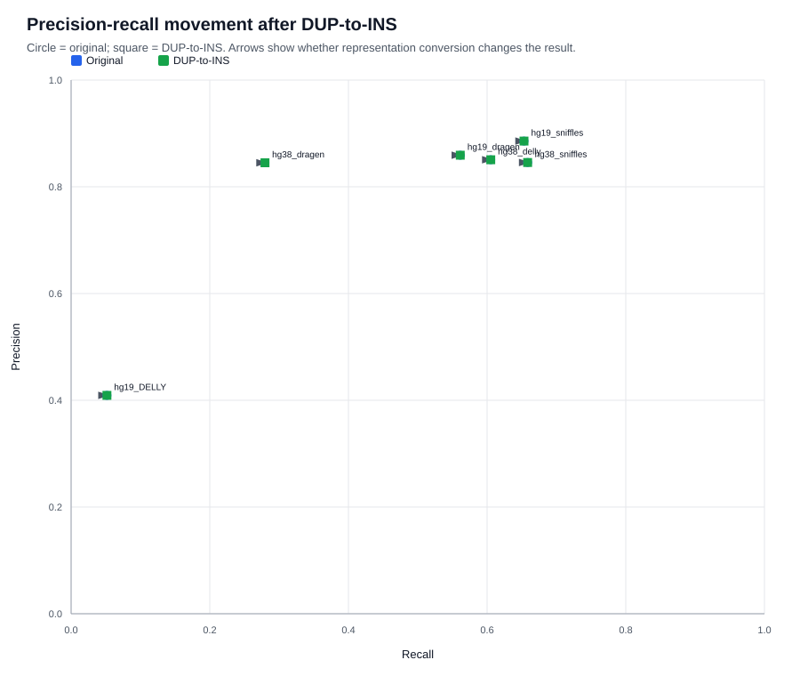
Precision-recall movement: arrows show whether each run moves after DUP-to-INS conversion.
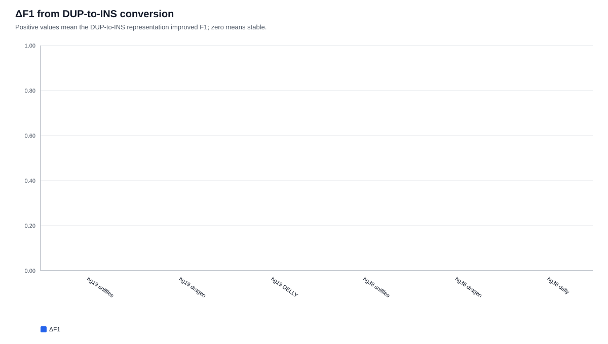
ΔF1 from DUP-to-INS conversion: positive means DUP-to-INS improved F1.
| Run | Original F1 | DUP-to-INS F1 | ΔF1 | Original recall | DUP-to-INS recall |
|---|---|---|---|---|---|
| hg19 sniffles | 0.752 | 0.752 | 0.0000 | 0.653 | 0.653 |
| hg19 dragen | 0.679 | 0.679 | 0.0000 | 0.561 | 0.561 |
| hg19 DELLY | 0.092 | 0.092 | 0.0000 | 0.052 | 0.052 |
| hg38 sniffles | 0.740 | 0.740 | 0.0000 | 0.658 | 0.658 |
| hg38 dragen | 0.420 | 0.420 | 0.0000 | 0.280 | 0.280 |
| hg38 delly | 0.707 | 0.707 | 0.0000 | 0.605 | 0.605 |